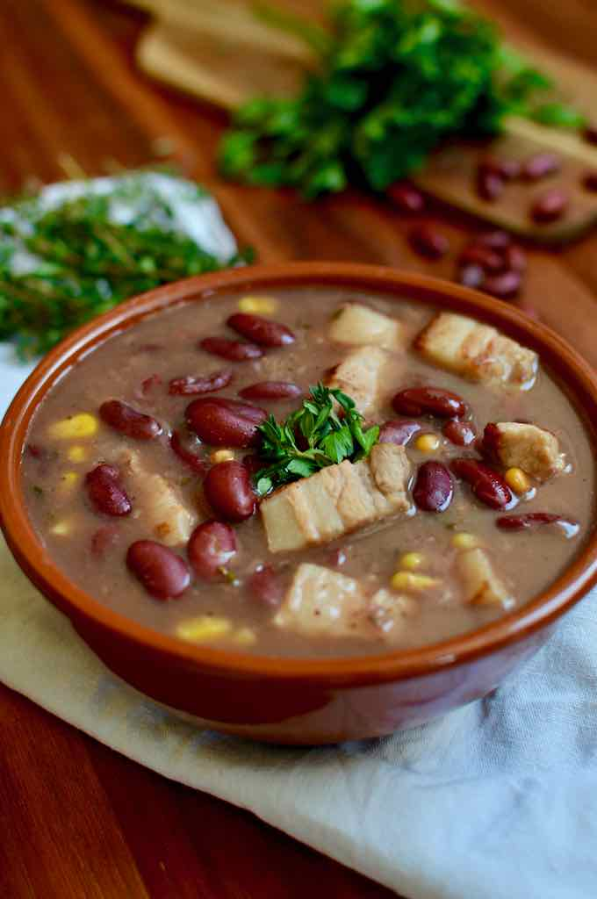

Tchaka

Description
The tchaka is a traditional dish from Haiti. Particularly nutritious, it is generally associated with a festive and family atmosphere.
It's a kind of stew left to simmer for a long time in a fragrant broth
Ingredients
- 200 g de haricots rouges
- 2 pieds de porc fumés salés , coupés en tranches (ou de viande de porc fumée salée)
- 1 petite botte de thym
- 3 cuillères à soupe de persil ciselé
- 8 gousses d'ail , pelées et hachées
- 1 oignon moyen
- 1 piment cabri (ou habanero)
- 3 feuilles de laurier
- 2 oranges amères , pressées
- 1 citron vert , pressé
- 2 cuillères à soupe d’huile d’olive
- Poivre
Steps
- Tremper les grains de maïs et les haricots rouges dans une grande quantité d’eau froide pendant 10 heures.
- Jeter l'eau.
- Verser le maïs et les haricots rouges dans une cocotte minute.
- Ajouter le persil, la moitié de l’ail, la moitié du thym, l'oignon, le piment, et du poivre.
- Couvrir d’eau à hauteur, fermer la cocotte minute et cuire à feu moyen pendant 15 minutes à partir de la reprise de l’ébullition. Égoutter et réserver l’eau de cuisson.
- Rincer les pieds de porc à grande eau et abondamment et les placer dans une cocotte minute.
- Ajouter le reste de l'ail, du thym, et du persil, du poivre et le jus des oranges amères.
- Couvrir d'eau à hauteur, fermer la cocotte minute et cuire pendant 45 minutes. Égoutter les pieds de porcs et réserver l’eau de cuisson.
- Dans une cocotte ou un faitout à fond épais, chauffer l’huile d’olive et faire roussir les pieds de porcs. Ajouter l'eau de cuisson des pieds de porc.
- Ajouter le mélange haricots rouges et maïs ainsi que leur eau de cuisson réservée.
- Ajouter les feuilles de laurier et le piment cabri entier.
- Couvrir et laisser mijoter à feu doux pendant environ 2 heures, ou jusqu'à ce que le tchaka épaississe.
- En toute fin de cuisson, ajouter le jus de citron vert.
Go to Home page